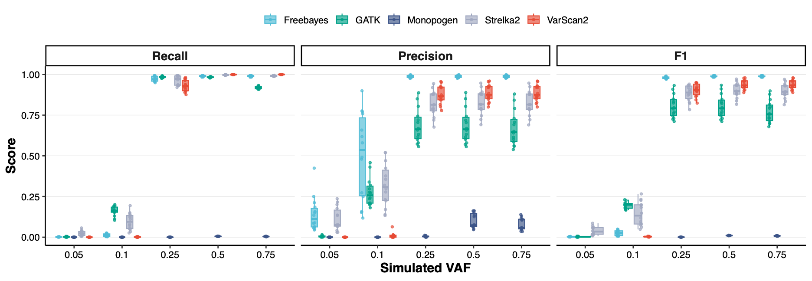
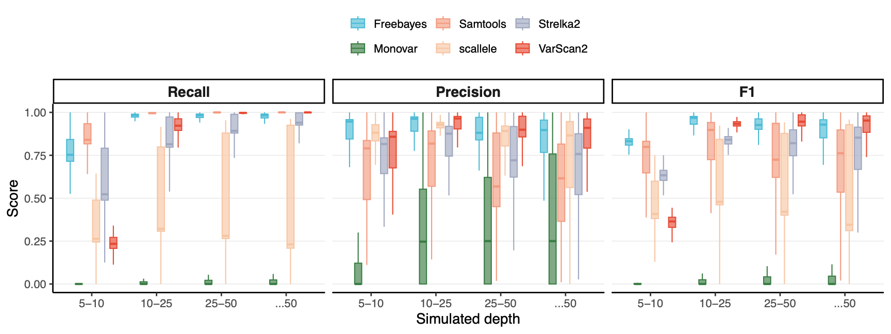

Chapter 4 Read-level simulations
Read-level simulations were performed by introducing synthetic SNVs directly into the original RNA-seq BAM files to evaluate variant calling performance across different variant allele frequencies (VAFs) and sequencing depths. Candidate sites were sampled from predefined genomic regions after excluding previously identified variants and their ±100 bp flanking regions. Eligible reads or fragments were selected based on alignment status and sequencing quality, and reference-supporting bases were modified according to the target VAF. Modified BAM files and corresponding ground-truth records were generated for downstream evaluation.
For VAF simulations, five target VAFs (0.05, 0.10, 0.25, 0.50, and 0.75) were evaluated at sequencing depths ≥40×, with 10,000 candidate sites for 10x Genomics and 3,000 for Smart-seq2. For depth simulations, a fixed VAF of 0.4 was used. The Smart-seq2 workflow sampled 50,000 candidate sites and selected up to 3,000 sites per effective-depth bin (5–9×, 10–24×, 25–49×, and ≥50×).
As the simulation procedures were similar across the two sequencing platforms, only the 10x Genomics VAF simulation and Smart-seq2 depth simulation are presented below as representative workflows to avoid redundancy.
4.1 10x VAF simulation
simulation-region preparation
Step 1. Extract and merge protein-coding exon regions from the GTF annotation.
gtf="/home/tantingting/scmut/ref/refdata-gex-GRCh38-2024-A/genes/genes.gtf"
outdir="/mnt/storage/tantingting/scmut/simu/region"
mkdir -p "$outdir"
cat "$gtf" | awk 'BEGIN{OFS="\t"}
$3=="exon" &&
$0 ~ /gene_type "protein_coding"/ &&
$1 ~ /^chr([1-9]|1[0-9]|2[0-2])$/ {
print $1,$4-1,$5
}' | bedtools sort -i - | bedtools merge -i - > "${outdir}/protein_coding_exon.merged.bed"
wc -l "${outdir}/protein_coding_exon.merged.bed"
awk '{sum+=$3-$2} END{print "Total exon length:",sum/1000000,"Mb"}' "${outdir}/protein_coding_exon.merged.bed"
head "${outdir}/protein_coding_exon.merged.bed"Step 2. Intersect protein-coding exon regions with scRNA-seq regions covered at ≥10× for each sample.
samples=(Acral1 Acral2 Acral3pre Acral3post Acral4 Cutaneous1 Cutaneous1Lym Cutaneous2)
for sample in "${samples[@]}"
do
INBED="/mnt/storage/tantingting/scmut/WES_gold/2_melanoma/region/whole/scRNA_${sample}_gt10_strict.bed"
OUTBED="${OUTDIR}/${sample}.exon_gt10.bed"
bedtools intersect -a $EXON_BED -b $INBED | bedtools sort -i - | bedtools merge -i - > $OUTBED
n=$(wc -l < $OUTBED)
mb=$(awk '
{sum+=$3-$2}
END{printf "%.2f",sum/1000000}
' $OUTBED)
echo -e "melanoma\t${sample}\t${n}\t${mb}" >> ${OUTDIR}/summary.tsv
doneStep 3. Exclude sites identified by the union of six variant callers and their ±100 bp flanking regions to obtain the final simulation regions.
REGION_DIR="/mnt/storage/tantingting/scmut/simu/region/exon_gt10"
UNION_DIR="/mnt/storage/tantingting/scmut/simu/original_union_sites"
OUT_DIR="/mnt/storage/tantingting/scmut/simu/region/final_sim_region"
mkdir -p "$OUT_DIR"
echo -e "Sample\tN_region\tLength_Mb" > "${OUT_DIR}/final_region_summary.tsv"
for sample in P4_cSCC P5_cSCC P6_cSCC P7_cSCC P9_cSCC P10_cSCC Acral1 Acral2 Acral3pre Acral3post Acral4 Cutaneous1 Cutaneous1Lym Cutaneous2
do
bedtools subtract -a "${REGION_DIR}/${sample}.exon_gt10.bed" \
-b "${UNION_DIR}/${sample}.union_6tools.plusminus100bp.bed" | bedtools sort -i - | bedtools merge -i - \
> "${OUT_DIR}/${sample}.final_sim_region.bed"
n=$(wc -l < "${OUT_DIR}/${sample}.final_sim_region.bed")
mb=$(awk '{sum+=$3-$2} END{printf "%.2f",sum/1000000}' "${OUT_DIR}/${sample}.final_sim_region.bed")
echo -e "${sample}\t${n}\t${mb}" >> "${OUT_DIR}/final_region_summary.tsv"
done
column -t "${OUT_DIR}/final_region_summary.tsv"VAF simulation code
REF=/home/tantingting/scmut/ref/bwa_ref/genome.fa
REGION_DIR=/mnt/storage/tantingting/scmut/simu/region/final_sim_region_dp40
OUTDIR=/mnt/storage/tantingting/scmut/simu/direct_spike_vaf_dp40_final
N_SITE=10000
FLANK=0
MINDEPTH=40
MINMUTREADS=2
THREADS=16
SEED=1234
VAFS=(0.05 0.1 0.25 0.5 0.75)
mkdir -p ${OUTDIR}/{scripts,sites,window,bam,log,truth,summary}
mkdir -p ${OUTDIR}/cache
#samples=(P4_cSCC)
#samples=(
#P4_cSCC P5_cSCC P6_cSCC P7_cSCC P9_cSCC P10_cSCC
#Acral1 Acral2 Acral3pre Acral3post Acral4 Cutaneous1 Cutaneous1Lym Cutaneous2
#)
samples=("$@")
if [[ ${#samples[@]} -eq 0 ]]; then
echo "[ERROR] No sample specified"
exit 1
fi
get_bam() {
sample=$1
case "$sample" in
P*_cSCC) echo "/mnt/storage/tantingting/scmut/bam/1_cSCC_scRNA/${sample}/outs/${sample}_map.bam" ;;
Acral1) echo "/mnt/storage/tantingting/scmut/bam/2_melanoma_scRNA/Acral1_SRR20791206/outs/Acral1_SRR20791206_map.bam" ;;
Acral2) echo "/mnt/storage/tantingting/scmut/bam/2_melanoma_scRNA/Acral2_SRR20791205/outs/Acral2_SRR20791205_map.bam" ;;
Acral3pre) echo "/mnt/storage/tantingting/scmut/bam/2_melanoma_scRNA/Acral3pre_SRR20791203/outs/Acral3pre_SRR20791203_map.bam" ;;
Acral3post) echo "/mnt/storage/tantingting/scmut/bam/2_melanoma_scRNA/Acral3post_SRR20791202/outs/Acral3post_SRR20791202_map.bam" ;;
Acral4) echo "/mnt/storage/tantingting/scmut/bam/2_melanoma_scRNA/Acral4_SRR20791201/outs/Acral4_SRR20791201_map.bam" ;;
Cutaneous1) echo "/mnt/storage/tantingting/scmut/bam/2_melanoma_scRNA/Cutaneous1_SRR20791198/outs/Cutaneous1_SRR20791198_map.bam" ;;
Cutaneous1Lym) echo "/mnt/storage/tantingting/scmut/bam/2_melanoma_scRNA/Cutaneous1Lym_SRR20791196/outs/Cutaneous1Lym_SRR20791196_map.bam" ;;
Cutaneous2) echo "/mnt/storage/tantingting/scmut/bam/2_melanoma_scRNA/Cutaneous2_SRR20791197/outs/Cutaneous2_SRR20791197_map.bam" ;;
*) echo "NA" ;;
esac
}
############################################
# 1. Generate fixed master sites for each sample
############################################
cat > ${OUTDIR}/scripts/make_master_sites.py << 'PY'
import sys, random, subprocess, bisect
import os
import pickle
region_bed, ref, n_site, out, seed = sys.argv[1], sys.argv[2], int(sys.argv[3]), sys.argv[4], int(sys.argv[5])
random.seed(seed)
bases = ["A", "C", "G", "T"]
regions, cum = [], []
total = 0
with open(region_bed) as f:
for line in f:
if not line.strip() or line.startswith("#"):
continue
chrom, start, end = line.strip().split()[:3]
start, end = int(start), int(end)
if end <= start:
continue
total += end - start
regions.append((chrom, start, end))
cum.append(total)
if total == 0:
sys.exit("No valid regions")
seen, tries, max_tries = set(), 0, n_site * 200
with open(out, "w") as w:
while len(seen) < n_site and tries < max_tries:
tries += 1
i = bisect.bisect_left(cum, random.randint(1, total))
chrom, start, end = regions[i]
pos = random.randint(start, end - 1) + 1
key = (chrom, pos)
if key in seen:
continue
try:
fa = subprocess.check_output(["samtools", "faidx", ref, f"{chrom}:{pos}-{pos}"], text=True).splitlines()
ref_base = "".join(fa[1:]).upper()
except Exception:
continue
if len(ref_base) != 1 or ref_base not in bases:
continue
alt = random.choice([b for b in bases if b != ref_base])
seen.add(key)
w.write(f"{chrom}\t{pos}\t{pos}\t{ref_base}\t{alt}\n")
PY
############################################
# 2. Direct spike-in script
# Key modifications: Instead of randomly modifying individual reads, fragments are first selected based on query_name. During the second BAM pass, both R1 and R2 sharing the same query_name are modified if they cover the target site.
############################################
cat > ${OUTDIR}/scripts/direct_spike_bam.py << 'PY'
import sys, random, pysam, math
import bisect
from collections import defaultdict
import os
import pickle
from collections import defaultdict
bam_in, sites_file, ref_fa, bam_out, truth_out, min_depth, min_mutreads, seed, cache_file = sys.argv[1:10]
min_depth, min_mutreads, seed = int(min_depth), int(min_mutreads), int(seed)
random.seed(seed)
bam = pysam.AlignmentFile(bam_in, "rb")
sites = []
with open(sites_file) as f:
for line in f:
if not line.strip() or line.startswith("#"):
continue
fs = line.strip().split()
chrom, pos, end, vaf, ref_base, alt = fs[0], int(fs[1]), int(fs[2]), float(fs[3]), fs[4].upper(), fs[5].upper()
sites.append((chrom, pos, vaf, ref_base, alt))
sites.sort(key=lambda x: (x[0], x[1]))
# fragment_edit_map:
# key = (chrom, pos, query_name)
# value = alt
fragment_edit_map = {}
truth = []
############################################
# Optimization 1: Group sites by chromosome
# Optimization 2: Compute aligned_pairs only once per read
# Optimization 3: Collect candidate fragments for each site
############################################
if os.path.exists(cache_file):
print(
f"[INFO] load cache: {cache_file}",
file=sys.stderr
)
with open(cache_file, "rb") as f:
site_info = pickle.load(f)
for chrom, pos, vaf, ref_base, alt in sites:
if (chrom, pos) not in site_info:
continue
site_info[(chrom, pos)]["vaf"] = vaf
else:
print(
f"[INFO] build cache: {cache_file}",
file=sys.stderr
)
site_info = {}
# Build the site information table
for chrom, pos, vaf, ref_base, alt in sites:
site_info[(chrom, pos)] = {
"vaf": vaf,
"ref": ref_base,
"alt": alt,
"cover": 0,
"candidates": set()
}
chr_sites = defaultdict(set)
for chrom, pos, vaf, ref_base, alt in sites:
chr_sites[chrom].add(pos)
print(
f"[INFO] {len(site_info)} sites loaded",
file=sys.stderr
)
############################################
# Batch scan by chromosome
############################################
for chrom in sorted(chr_sites.keys()):
target_pos = sorted(chr_sites[chrom])
# pysam.fetch() uses 0-based, half-open intervals [start, end)
start = min(target_pos) - 1
end = max(target_pos)+1
print(
f"[INFO] scanning {chrom}",
file=sys.stderr
)
try:
iterator = bam.fetch(chrom, start, end)
except ValueError:
continue
n_read = 0
for r in iterator:
if r.is_unmapped:
continue
if r.is_secondary:
continue
if r.is_supplementary:
continue
seq = r.query_sequence
if seq is None:
continue
n_read += 1
aligned = {
rp + 1: qp
for qp, rp in r.get_aligned_pairs(matches_only=False)
if qp is not None and rp is not None
}
if not aligned:
continue
#read_start = min(aligned)
#read_end = max(aligned)
#1-based genomic position
read_start = r.reference_start + 1
read_end = r.reference_end
if read_end is None:
continue
####################################
# Find target sites covered by the current read
####################################
left = bisect.bisect_left(
target_pos,
read_start
)
right = bisect.bisect_right(
target_pos,
read_end
)
covered_sites = target_pos[left:right]
if not covered_sites:
continue
for pos in covered_sites:
qp = aligned.get(pos)
if qp is None:
continue
base = seq[qp].upper()
if base not in "ACGT":
continue
info = site_info[(chrom, pos)]
info["cover"] += 1
if base == info["ref"]:
info["candidates"].add(
r.query_name
)
print(
f"[INFO] {chrom}: {n_read} reads scanned",
file=sys.stderr
)
##################################################
# Save the cache after the first scan
##################################################
with open(cache_file, "wb") as f:
pickle.dump(site_info, f)
print(
f"[INFO] cache saved: {cache_file}",
file=sys.stderr
)
############################################
# Select fragments to modify based on coverage depth and VAF
############################################
fragment_edit_map = {}
truth = []
for (chrom, pos), info in site_info.items():
dp = info["cover"]
if dp < min_depth:
continue
candidates = list(
info["candidates"]
)
if len(candidates) == 0:
continue
target_alt_reads = max(
min_mutreads,
math.ceil(dp * info["vaf"])
)
n_choose = min(
len(candidates),
target_alt_reads
)
chosen_names = random.sample(
candidates,
n_choose
)
for name in chosen_names:
fragment_edit_map[
(chrom, pos, name)
] = info["alt"]
truth.append(
(
chrom,
pos,
info["ref"],
info["alt"],
dp,
len(candidates),
n_choose,
"NA"
)
)
print(
f"[INFO] fragment_edit_map={len(fragment_edit_map)}",
file=sys.stderr
)
############################################
# Second pass: Reopen the BAM and write reads sequentially
#
# First, check query_name to identify reads requiring modification.
# Compute aligned_pairs only for selected fragments.
# This allows most unmodified reads to be written directly.
############################################
bam.close()
bam = pysam.AlignmentFile(bam_in, "rb")
out = pysam.AlignmentFile(bam_out, "wb", template=bam)
edited_reads = 0
edited_bases = 0
site_edited_bases = defaultdict(int)
edit_by_qname = defaultdict(lambda: defaultdict(dict))
for chrom, pos, qname in fragment_edit_map:
alt = fragment_edit_map[(chrom, pos, qname)]
edit_by_qname[qname][chrom][pos] = alt
print(
f"[INFO] edit_by_qname={len(edit_by_qname)}",
file=sys.stderr
)
for r in bam:
if r.is_unmapped or r.is_secondary or r.is_supplementary or r.query_sequence is None:
out.write(r)
continue
qname = r.query_name
if qname not in edit_by_qname:
out.write(r)
continue
chrom = r.reference_name
if chrom is None:
out.write(r)
continue
if chrom not in edit_by_qname[qname]:
out.write(r)
continue
target_edits = edit_by_qname[qname][chrom]
seq = list(r.query_sequence)
quals = r.query_qualities
changed = 0
########################################
# Compute aligned_pairs only for reads that may require modification
########################################
for qp, rp in r.get_aligned_pairs(matches_only=False):
if qp is None or rp is None:
continue
pos = rp + 1
if pos not in target_edits:
continue
alt = target_edits[pos]
if qp < len(seq) and seq[qp].upper() in "ACGT" and seq[qp].upper() != alt:
seq[qp] = alt
changed += 1
site_edited_bases[(chrom, pos)] += 1
if changed > 0:
r.query_sequence = "".join(seq)
r.query_qualities = quals
edited_reads += 1
edited_bases += changed
out.write(r)
out.close()
bam.close()
############################################
# Output ground truth
# mut_reads_planned = Number of selected query_names
# mut_bases_edited = Number of read bases actually modified
# real_vaf = mut_bases_edited / dp
############################################
with open(truth_out, "w") as w:
w.write("chrom\tpos\tref\talt\tdp\tcandidate_fragments\tmut_fragments_planned\tmut_bases_edited\treal_vaf\n")
for chrom, pos, ref_base, alt, dp, n_candidate, n_choose, _ in truth:
mut_bases = site_edited_bases.get((chrom, pos), 0)
real_vaf = mut_bases / dp if dp > 0 else 0
w.write("\t".join(map(str, [chrom, pos, ref_base, alt, dp, n_candidate, n_choose, mut_bases, real_vaf])) + "\n")
sys.stderr.write(f"[INFO] sites_input={len(sites)} truth_sites={len(truth)} edited_reads={edited_reads} edited_bases={edited_bases}\n")
PY
manifest=${OUTDIR}/summary/prepare_manifest.tsv
if [[ ! -s ${manifest} ]]; then
echo -e "Sample\tMode\tVAF\tMasterSites\tSites\tWindowBed\tOriginalSubsetBam\tSpikeinBam\tCalmdBam\tTruth" > ${manifest}
fi
############################################
# 3. Main loop
############################################
for sample in "${samples[@]}"; do
echo "========== ${sample} =========="
bam=$(get_bam ${sample})
region_bed=${REGION_DIR}/${sample}.final_sim_region_dp40.bed
master_sites=${OUTDIR}/sites/${sample}.master_sites.txt
sample_window=${OUTDIR}/window/${sample}.master.window.bed
sample_subset=${OUTDIR}/bam/${sample}.master.original_subset.bam
[[ "${bam}" != "NA" ]] || { echo "[SKIP] unknown sample: ${sample}"; continue; }
[[ -f ${region_bed} ]] || { echo "[SKIP] no region: ${region_bed}"; continue; }
[[ -f ${bam} ]] || { echo "[SKIP] no bam: ${bam}"; continue; }
[[ -f ${bam}.bai ]] || samtools index ${bam}
if [[ -s ${master_sites} ]]; then
echo "[1] master sites exists, skip: ${master_sites}"
else
echo "[1] make master sites"
python ${OUTDIR}/scripts/make_master_sites.py ${region_bed} ${REF} ${N_SITE} ${master_sites} ${SEED}
fi
n_master=$(wc -l < ${master_sites})
echo "[INFO] master sites: ${n_master}"
[[ ${n_master} -gt 0 ]] || { echo "[SKIP] no master sites: ${sample}"; continue; }
if [[ -s ${sample_window} ]]; then
echo "[2] master window exists, skip: ${sample_window}"
else
echo "[2] make master window"
awk -v OFS="\t" -v flank=${FLANK} '{s=$2-1-flank; e=$3+flank; if(s<0)s=0; print $1,s,e}' ${master_sites} \
| sort -k1,1 -k2,2n | bedtools merge > ${sample_window}
fi
if [[ -s ${sample_subset} && -s ${sample_subset}.bai ]]; then
echo "[3] master subset BAM exists, skip: ${sample_subset}"
else
echo "[3] subset BAM once"
samtools view -@ ${THREADS} -P -b -L ${sample_window} ${bam} > ${sample_subset}
samtools index ${sample_subset}
fi
for vaf in "${VAFS[@]}"; do
tag=${sample}.vaf${vaf}
cache=${OUTDIR}/cache/${sample}.site_info.pkl
sites=${OUTDIR}/sites/${tag}.sites.txt
spikein=${OUTDIR}/bam/${tag}.spikein.bam
spikein_sorted=${OUTDIR}/bam/${tag}.spikein.sorted.bam
spikein_calmd=${OUTDIR}/bam/${tag}.spikein.sorted.calmd.bam
truth=${OUTDIR}/truth/${tag}.truth.tsv
echo "[4] ${sample} VAF=${vaf}"
if [[ -s ${sites} ]]; then
echo "[4] sites exists, skip: ${sites}"
else
awk -v OFS="\t" -v vaf=${vaf} '{print $1,$2,$3,vaf,$4,$5}' ${master_sites} > ${sites}
fi
if [[ -s ${spikein_calmd} && -s ${spikein_calmd}.bai && -s ${truth} ]]; then
echo "[5] calmd spike-in BAM exists, skip: ${spikein_calmd}"
else
echo "[5] direct spike-in BAM"
python ${OUTDIR}/scripts/direct_spike_bam.py ${sample_subset} ${sites} ${REF} ${spikein} \
${truth} ${MINDEPTH} ${MINMUTREADS} ${SEED} ${cache} > ${OUTDIR}/log/${tag}.log 2>&1
[[ -s ${spikein} ]] || { echo "[ERROR] direct spike-in failed: check ${OUTDIR}/log/${tag}.log"; continue; }
echo "[6] sort/index"
samtools sort -@ ${THREADS} -o ${spikein_sorted} ${spikein}
samtools index ${spikein_sorted}
samtools quickcheck ${spikein_sorted}
echo "[7] calmd/index"
samtools calmd -@ ${THREADS} -b ${spikein_sorted} ${REF} > ${spikein_calmd}
samtools index ${spikein_calmd}
samtools quickcheck ${spikein_calmd}
fi
n_truth=$(($(wc -l < ${truth}) - 1))
echo "[INFO] truth sites: ${n_truth}"
if ! awk -v s="${sample}" -v v="${vaf}" '$1==s && $2=="VAF" && $3==v{found=1} END{exit found?0:1}' ${manifest}; then
echo -e "${sample}\tVAF\t${vaf}\t${master_sites}\t${sites}\t${sample_window}\t${sample_subset}\t${spikein_sorted}\t${spikein_calmd}\t${truth}" >> ${manifest}
fi
done
echo "[DONE] ${sample}"
doneVAF simulation plotting
suppressPackageStartupMessages({
library(data.table)
library(dplyr)
library(ggplot2)
library(stringr)
library(R.utils)
})
base_dir <- "/mnt/storage/tantingting/scmut/simu/direct_spike_vaf_dp40_final"
truth_dir <- file.path(base_dir, "truth")
vcf_dir <- file.path(base_dir, "caller/newonly")
out_dir <- file.path(base_dir, "performance_plot")
dir.create(out_dir, recursive = TRUE, showWarnings = FALSE)
tools <- c("Freebayes", "GATK", "Monopogen", "Strelka2", "VarScan2")
vafs <- c("0.05", "0.1", "0.25", "0.5", "0.75")
truth_files <- list.files(truth_dir, pattern = "\\.truth\\.tsv$", full.names = FALSE)
samples <- sort(unique(sub("\\.vaf.*$", "", truth_files)))
read_truth <- function(f) {
x <- fread(f)
names(x) <- str_replace_all(names(x), "^#", "")
x[, chrom := as.character(chrom)]
x[, pos := as.integer(pos)]
x[, ref := toupper(as.character(ref))]
x[, alt := toupper(as.character(alt))]
unique(x[, .(chrom, pos, ref, alt)])
}
read_vcf <- function(f) {
if (!file.exists(f))
return(data.table(chrom = character(), pos = integer(), ref = character(), alt = character()))
x <- tryCatch(fread(cmd = paste("bcftools query -f '%CHROM\\t%POS\\t%REF\\t%ALT\\n'", shQuote(f))), error = function(e) data.table())
if (nrow(x) == 0)
return(data.table(chrom = character(), pos = integer(), ref = character(), alt = character()))
setnames(x, c("chrom", "pos", "ref", "alt"))
x[, chrom := as.character(chrom)]
x[, pos := as.integer(pos)]
x[, ref := toupper(as.character(ref))]
x[, alt := toupper(as.character(alt))]
x <- x[nchar(ref) == 1 & nchar(alt) == 1]
unique(x[, .(chrom, pos, ref, alt)])
}
res <- list()
k <- 1
for (sample in samples) {
for (vaf in vafs) {
truth_file <- file.path(truth_dir, paste0(sample, ".vaf", vaf, ".truth.tsv"))
if (!file.exists(truth_file))
next
truth <- read_truth(truth_file)
truth_key <- paste(truth$chrom, truth$pos, truth$ref, truth$alt, sep = ":")
for (tool in tools) {
vcf_file <- file.path(vcf_dir, paste0(sample, ".vaf", vaf, ".", tool, ".newonly.vcf.gz"))
call <- read_vcf(vcf_file)
call_key <- paste(call$chrom, call$pos, call$ref, call$alt, sep = ":")
tp <- sum(call_key %in% truth_key)
fp <- sum(!call_key %in% truth_key)
fn <- sum(!truth_key %in% call_key)
precision <- ifelse(tp + fp > 0, tp/(tp + fp), NA_real_)
recall <- ifelse(tp + fn > 0, tp/(tp + fn), NA_real_)
f1 <- ifelse(!is.na(precision + recall) & precision + recall > 0, 2 * precision * recall/(precision +
recall), NA_real_)
res[[k]] <- data.table(sample = sample, vaf = as.numeric(vaf), tool = tool, truth_n = length(truth_key),
call_n = length(call_key), TP = tp, FP = fp, FN = fn, Precision = precision, Recall = recall, F1 = f1)
k <- k + 1
}
}
}
perf <- rbindlist(res)
perf[, tool := factor(tool, levels = tools)]
perf[, vaf_label := factor(vaf, levels = as.numeric(vafs), labels = vafs)]
fwrite(perf, file.path(out_dir, "vaf_performance_summary.tsv"), sep = "\t")
tool_cols <- c(Freebayes = "#1F78B4", GATK = "#33A02C", Monopogen = "#6A3D9A", Strelka2 = "#B15928", VarScan2 = "#E31A1C")
plot_metric <- function(metric) {
p <- ggplot(perf, aes(x = vaf_label, y = .data[[metric]], fill = tool, color = tool)) +
geom_boxplot(outlier.shape = NA,
width = 0.65, position = position_dodge(width = 0.8), alpha = 0.65) +
geom_point(position = position_jitterdodge(jitter.width = 0.12,
dodge.width = 0.8), size = 1.4, alpha = 0.75) +
scale_fill_manual(values = tool_cols) +
scale_color_manual(values = tool_cols) +
scale_y_continuous(limits = c(0, 1), breaks = seq(0, 1, 0.25)) +
labs(x = "Simulated VAF", y = metric,
fill = NULL, color = NULL) +
theme_classic(base_size = 14) +
theme(axis.text.x = element_text(size = 12,
color = "black"), axis.text.y = element_text(size = 12, color = "black"), axis.title = element_text(size = 15,
color = "black", face = "bold"), legend.position = "top", legend.text = element_text(size = 11), panel.grid.major.y = element_line(color = "grey90",
linewidth = 0.3))
ggsave(file.path(out_dir, paste0("VAF_", metric, "_boxplot.pdf")), p, width = 7.5, height = 4.8)
ggsave(file.path(out_dir, paste0("VAF_", metric, "_boxplot.png")), p, width = 7.5, height = 4.8, dpi = 300)
}
plot_metric("Recall")
plot_metric("Precision")
plot_metric("F1")
perf_long <- melt(perf, id.vars = c("sample", "vaf", "vaf_label", "tool", "truth_n", "call_n", "TP", "FP", "FN"),
measure.vars = c("Recall", "Precision", "F1"), variable.name = "Metric", value.name = "Score")
p_all <- ggplot(perf_long, aes(x = vaf_label, y = Score, fill = tool, color = tool)) +
geom_boxplot(outlier.shape = NA,
width = 0.65, position = position_dodge(width = 0.8), alpha = 0.65) +
geom_point(position = position_jitterdodge(jitter.width = 0.12,
dodge.width = 0.8), size = 1.1, alpha = 0.7) +
facet_wrap(~Metric, nrow = 1) +
scale_fill_manual(values = tool_cols) +
scale_color_manual(values = tool_cols) +
scale_y_continuous(limits = c(0, 1), breaks = seq(0, 1, 0.25)) +
labs(x = "Simulated VAF",
y = "Score", fill = NULL, color = NULL) +
theme_classic(base_size = 14) +
theme(axis.text.x = element_text(size = 11,
color = "black"), axis.text.y = element_text(size = 11, color = "black"), axis.title = element_text(size = 15,
color = "black", face = "bold"), strip.text = element_text(size = 14, face = "bold"), legend.position = "top",
legend.text = element_text(size = 11), panel.grid.major.y = element_line(color = "grey90", linewidth = 0.3))
ggsave(file.path(out_dir, "VAF_Recall_Precision_F1_boxplot.pdf"), p_all, width = 12, height = 4.5)
ggsave(file.path(out_dir, "VAF_Recall_Precision_F1_boxplot.png"), p_all, width = 12, height = 4.5, dpi = 300)
message("[DONE] output: ", out_dir)
Figure 4.1: Precision, recall, and F1-score of five variant callers evaluated using spike-in simulations across different simulated VAFs. For each sample, approximately 10,000 synthetic SNVs were introduced into regions with sequencing depth ≥40X for each condition.
4.2 Smart-seq2 DP simulation
simulation-region preparation
BASE="/mnt/storage/tantingting/scmut_smart"
MANIFEST="${BASE}/bam/star_qc_unique_ge10k_scrna_sample_wes.tsv"
# Protein-coding exon regions
EXON_BED="/mnt/storage/tantingting/scmut/simu/region/protein_coding_exon.merged.bed"
# Precomputed scRNA-seq regions with DP >= 1
SCRNA_GE1_BASE="${BASE}/WES_gold/smartseq_callable"
# Precomputed union sites from seven callers with ±100 bp flanking regions
UNION_DIR="${BASE}/simu/union_sites"
OUT_DIR="${BASE}/simu/region/dp_sim_region"
mkdir -p "$OUT_DIR"
echo -e "Sample\tSRR\tWES_SRR\tDataset\tN_region\tLength_bp\tLength_Mb" \
> "${OUT_DIR}/final_region_summary.tsv"
tail -n +2 "$MANIFEST" |
while read -r scRNA_SRR sample WES_SRR
do
[[ -n "$scRNA_SRR" && -n "$sample" ]] || continue
# Determine the dataset based on the sample ID
if [[ "$sample" == PT* ]]; then
DATASET="1_TNBC"
SCRNA_GE1_DIR="${SCRNA_GE1_BASE}/TNBC/scrna_ge1"
elif [[ "$sample" == BC* ]]; then
DATASET="2_BRCA"
SCRNA_GE1_DIR="${SCRNA_GE1_BASE}/BRCA/scrna_ge1"
else
echo "[WARN] skip $sample $scRNA_SRR"
continue
fi
echo "=============================="
echo "[INFO] Sample : $sample"
echo "[INFO] SRR : $scRNA_SRR"
echo "[INFO] Dataset: $DATASET"
# Input files
scrna_bed="${SCRNA_GE1_DIR}/${scRNA_SRR}_scRNA_ge1.bed"
union_bed="${UNION_DIR}/${scRNA_SRR}.union_7tools.plusminus100bp.bed"
final_bed="${OUT_DIR}/${scRNA_SRR}.final_sim_region_ge1.bed"
if [[ ! -s "$scrna_bed" ]]; then
echo "[WARN] missing scRNA ge1: $scrna_bed"
continue
fi
if [[ ! -s "$union_bed" ]]; then
echo "[WARN] missing union: $union_bed"
continue
fi
# Intersect exon regions with scRNA-seq DP >= 1 regions
intersect_bed="${OUT_DIR}/${scRNA_SRR}.exon_ge1.tmp.bed"
bedtools intersect \
-a "$EXON_BED" \
-b "$scrna_bed" \
-wa -u |
bedtools sort -i - |
bedtools merge -i - > "$intersect_bed"
# Exclude union sites and their ±100 bp flanking regions
bedtools subtract \
-a "$intersect_bed" \
-b "$union_bed" |
bedtools sort -i - |
bedtools merge -i - > "$final_bed"
rm -f "$intersect_bed"
# Summarize the final simulation regions
n_region=$(wc -l < "$final_bed")
length_bp=$(awk '{sum += $3-$2} END{print sum+0}' "$final_bed")
length_mb=$(awk '{sum += $3-$2} END{printf "%.4f",sum/1000000}' "$final_bed")
echo -e \
"${sample}\t${scRNA_SRR}\t${WES_SRR}\t${DATASET}\t${n_region}\t${length_bp}\t${length_mb}" \
>> "${OUT_DIR}/final_region_summary.tsv"
echo "[INFO] Final regions: $n_region"
echo "[INFO] Length : ${length_mb} Mb"
done
echo "=============================="
echo "[INFO] Finished"
column -t -s $'\t' "${OUT_DIR}/final_region_summary.tsv"DP simulation code
#!/bin/bash
# Smart-seq2 DP effective-bin simulation
#
# 1. Randomly generate 50,000 candidate sites from Smart-seq2 callable regions with DP >= 1
# 2. Scan the BAM to calculate effective DP: Q>=20, A/C/G/T base, remove duplicate/secondary/supplementary/qcfail
# 3. Assign sites to mutually exclusive effective-DP bins: DP5-10, DP10-25, DP25-50,DP>=50
# 4. Simulate up to 3,000 sites per bin
# 5. Perform direct spike-in at a fixed VAF of 0.4
REF=/home/tantingting/scmut/ref/bwa_ref/genome.fa
OUTDIR=/mnt/storage/tantingting/scmut_smart/simu/direct_spike_dp_effbin_q20_vaf04_final
MANIFEST=/mnt/storage/tantingting/scmut_smart/bam/star_qc_unique_ge10k_scrna_sample_wes.tsv
REGION_DIR=/mnt/storage/tantingting/scmut_smart/simu/region/dp_sim_region
N_CANDIDATE=50000
FLANK=0
FIXED_VAF=0.4
N_SITE=3000
MINMUTREADS=2
THREADS=16
SEED=1234
MIN_BQ=20
MIN_MQ=0
DP_BINS=("5_10" "10_25" "25_50" "50plus")
mkdir -p ${OUTDIR}/{scripts,sites,window,bam,cache,truth,log,summary}
samples=("$@")
if [[ ${#samples[@]} -eq 0 ]]; then
echo "[ERROR] No sample specified"
exit 1
fi
get_bam(){
srr=$1
sample=$(awk -v s="$srr" '$1==s{print $2}' ${MANIFEST})
if [[ $sample == PT* ]]; then
echo "/mnt/storage/tantingting/scmut_smart/bam/1_TNBC_scRNA/md_bam/${srr}_sortmd.bam"
elif [[ $sample == BC* ]]; then
echo "/mnt/storage/tantingting/scmut_smart/bam/2_BRCA_scRNA/md_bam/${srr}_sortmd.bam"
else
echo "NA"
fi
}
###########################################################
# Step 1:Randomly generate candidate variant sites from Smart-seq2 callable regions
#
# Input: final_sim_region_ge1.bed
#
# Procedure:
# 1. Randomly select genomic positions within callable regions
# 2. Retrieve the reference allele from the reference genome
# 3. Randomly generate an alternative allele
#
# Output: candidate_sites.txt
#
# Note:
# Candidate sites are not the final simulated variants; they are subsequently filtered based on the actual effective DP.
###########################################################
cat > ${OUTDIR}/scripts/make_candidate_sites.py << 'PY'
import sys, random, subprocess, bisect
region_bed, ref, n_site, out, seed = (
sys.argv[1],
sys.argv[2],
int(sys.argv[3]),
sys.argv[4],
int(sys.argv[5])
)
random.seed(seed)
bases=["A","C","G","T"]
regions=[]
cum=[]
total=0
with open(region_bed) as f:
for line in f:
if not line.strip() or line.startswith("#"):
continue
chrom,start,end=line.strip().split()[:3]
start=int(start)
end=int(end)
if end<=start:
continue
total += end-start
regions.append((chrom,start,end))
cum.append(total)
seen=set()
with open(out,"w") as w:
tries=0
max_tries=n_site*300
while len(seen)<n_site and tries<max_tries:
tries+=1
idx=bisect.bisect_left(
cum,
random.randint(1,total)
)
chrom,start,end=regions[idx]
pos=random.randint(start,end-1)+1
if (chrom,pos) in seen:
continue
try:
fa=subprocess.check_output(
[
"samtools",
"faidx",
ref,
f"{chrom}:{pos}-{pos}"
],
text=True
).splitlines()
ref_base="".join(fa[1:]).upper()
except:
continue
if ref_base not in bases:
continue
alt=random.choice(
[x for x in bases if x!=ref_base]
)
seen.add((chrom,pos))
w.write(
f"{chrom}\t{pos}\t{pos}\t{ref_base}\t{alt}\n"
)
print(
f"[INFO] candidate sites generated: {len(seen)}",
file=sys.stderr
)
PY
###########################################################
# Step 2: Calculate the actual effective sequencing depth at candidate sites
#
# Purpose: Determine the number of reads eligible for simulation at each site using the original Smart-seq2 BAM.
#
# A read contributes to effective DP only if:
# 1. The read is mapped
# 2. It is not a secondary alignment
# 3. It is not a supplementary alignment
# 4. It is not marked as a duplicate
# 5. It has not failed QC
# 6. Mapping quality >= MIN_MQ
# 7. Base quality >= MIN_BQ
# 8. The aligned base is A/C/G/T
#
# The output cache contains:
# ref
# alt
# effective_dp: Number of A/C/G/T bases aligned to this site with BQ >= MIN_BQ
# ref_count: Number of bases matching the reference allele among effective-DP observations
# candidate_fragments: Set of query names eligible for conversion to alt; only reads/fragments with base == ref and BQ >= MIN_BQ are recorded
###########################################################
cat > ${OUTDIR}/scripts/build_effective_cache.py << 'PY'
import sys
import pysam
import pickle
from collections import defaultdict
bam_file=sys.argv[1]
candidate_file=sys.argv[2]
out_cache=sys.argv[3]
MIN_BQ=int(sys.argv[4])
MIN_MQ=int(sys.argv[5])
sites={}
chr_sites=defaultdict(set)
with open(candidate_file) as f:
for line in f:
chrom,pos,end,ref,alt=line.strip().split()
pos=int(pos)
sites[(chrom,pos)]={
"ref":ref,
"alt":alt,
"effective_dp":0,
"ref_count":0,
"candidate_fragments":set()
}
chr_sites[chrom].add(pos)
bam=pysam.AlignmentFile(
bam_file,
"rb"
)
for chrom in chr_sites:
positions=sorted(chr_sites[chrom])
pos_set=set(positions)
print(
f"[INFO] scanning {chrom}",
file=sys.stderr
)
try:
reads=bam.fetch(
chrom,
min(positions)-1,
max(positions)
)
except:
continue
for r in reads:
if (
r.is_unmapped
or r.is_secondary
or r.is_supplementary
or r.is_duplicate
or r.is_qcfail
):
continue
if r.mapping_quality < MIN_MQ:
continue
if (
r.query_sequence is None
or r.query_qualities is None
):
continue
seq=r.query_sequence
qual=r.query_qualities
for qp,rp in r.get_aligned_pairs(
matches_only=False
):
if qp is None or rp is None:
continue
pos=rp+1
if pos not in pos_set:
continue
if qual[qp] < MIN_BQ:
continue
base=seq[qp].upper()
if base not in "ACGT":
continue
info=sites[(chrom,pos)]
info["effective_dp"] += 1
if base == info["ref"]:
info["ref_count"] += 1
info["candidate_fragments"].add(
r.query_name
)
bam.close()
with open(out_cache,"wb") as f:
pickle.dump(
sites,
f,
protocol=pickle.HIGHEST_PROTOCOL
)
print(
f"[INFO] saved {out_cache}",
file=sys.stderr
)
for label,func in [
("DP1plus",
lambda x:x["effective_dp"]>=1),
("DP5plus",
lambda x:x["effective_dp"]>=5),
("DP10plus",
lambda x:x["effective_dp"]>=10),
("DP25plus",
lambda x:x["effective_dp"]>=25),
("DP50plus",
lambda x:x["effective_dp"]>=50),
]:
print(
label,
sum(
func(x)
for x in sites.values()
),
file=sys.stderr
)
PY
###########################################################
# Python 2: select_sites_by_effbin.py
#
# Function:
# Select sites from the effective cache by mutually exclusive DP bins
#
# Criteria:
# 1. effective_dp falls within the corresponding interval
# 2. candidate_fragments >= ceil(effective_dp * VAF)
#
# The second criterion is important:
# Insufficient reference-supporting reads prevent the target VAF of 0.4 from being achieved
###########################################################
cat > ${OUTDIR}/scripts/select_sites_by_effbin.py << 'PY'
import sys, pickle, random, math
cache_file, dp_bin, n_site, vaf, min_mutreads, out, seed = sys.argv[1:8]
n_site = int(n_site)
vaf = float(vaf)
min_mutreads = int(min_mutreads)
seed = int(seed)
random.seed(seed)
if dp_bin == "5_10":
lo, hi = 5,10
elif dp_bin == "10_25":
lo, hi = 10,25
elif dp_bin == "25_50":
lo, hi = 25,50
elif dp_bin == "50plus":
lo, hi = 50,None
else:
sys.exit(f"Unknown dp_bin: {dp_bin}")
with open(cache_file, "rb") as f:
cache = pickle.load(f)
eligible = []
for (chrom, pos), info in cache.items():
dp = info["effective_dp"]
ref_count = info["ref_count"]
n_candidate = len(info["candidate_fragments"])
need_alt = max(min_mutreads, math.ceil(dp * vaf))
in_bin = dp >= lo if hi is None else lo <= dp < hi
if in_bin and n_candidate >= need_alt:
eligible.append((chrom, pos, info["ref"], info["alt"], dp, ref_count, n_candidate, need_alt))
eligible.sort(key=lambda x: (x[0], x[1]))
print(f"[INFO] {dp_bin} eligible={len(eligible)}", file=sys.stderr)
if len(eligible) == 0:
sys.exit(f"No eligible sites for {dp_bin}")
if len(eligible) > n_site:
selected = random.sample(eligible, n_site)
selected.sort(key=lambda x: (x[0], x[1]))
else:
selected = eligible
print(f"[WARN] eligible < N_SITE, use all: {len(selected)}", file=sys.stderr)
with open(out, "w") as w:
for chrom, pos, ref, alt, dp, ref_count, n_candidate, need_alt in selected:
# chrom pos end vaf ref alt effective_dp_q20 ref_count_q20 candidate_fragments_q20 need_alt dp_bin
w.write(f"{chrom}\t{pos}\t{pos}\t{vaf}\t{ref}\t{alt}\t{dp}\t{ref_count}\t{n_candidate}\t{need_alt}\t{dp_bin}\n")
print(f"[INFO] selected={len(selected)}", file=sys.stderr)
PY
###########################################################
# Python 3: direct_spike_from_effective_cache.py
#
# Function:
# Perform direct spike-in on the BAM using selected sites and the effective cache
#
# Logic:
# 1. Modify need_alt candidate fragments at each site
# 2. Candidate fragments have already been restricted during build_effective_cache to:
# base == ref and BQ >= MIN_BQ
# 3. The second pass that edits the BAM also requires BQ >= MIN_BQ
# This keeps effective_dp_q20 and mut_bases_edited in the truth file consistent
#
# Truth output:
# effective_dp_q20
# ref_count_q20
# candidate_fragments_q20
# mut_fragments_planned
# mut_bases_edited
# real_vaf = mut_bases_edited / effective_dp_q20
###########################################################
cat > ${OUTDIR}/scripts/direct_spike_from_effective_cache.py << 'PY'
import sys, random, pysam, pickle
from collections import defaultdict
bam_in, sites_file, bam_out, truth_out, seed, cache_file, min_bq = sys.argv[1:8]
seed = int(seed)
min_bq = int(min_bq)
random.seed(seed)
with open(cache_file, "rb") as f:
cache = pickle.load(f)
sites = []
with open(sites_file) as f:
for line in f:
if not line.strip() or line.startswith("#"):
continue
fs = line.strip().split()
chrom = fs[0]
pos = int(fs[1])
vaf = float(fs[3])
ref = fs[4].upper()
alt = fs[5].upper()
dp = int(fs[6])
ref_count = int(fs[7])
n_candidate = int(fs[8])
need_alt = int(fs[9])
dp_bin = fs[10]
sites.append((chrom, pos, vaf, ref, alt, dp, ref_count, n_candidate, need_alt, dp_bin))
fragment_edit_map = {}
truth = []
for chrom, pos, vaf, ref, alt, dp, ref_count, n_candidate, need_alt, dp_bin in sites:
info = cache.get((chrom, pos))
if info is None:
continue
candidates = list(info["candidate_fragments"])
if len(candidates) < need_alt:
continue
chosen = random.sample(candidates, need_alt)
for qname in chosen:
fragment_edit_map[(chrom, pos, qname)] = alt
truth.append((chrom, pos, ref, alt, dp, ref_count, len(candidates), need_alt, dp_bin))
edit_by_qname = defaultdict(lambda: defaultdict(dict))
for chrom, pos, qname in fragment_edit_map:
edit_by_qname[qname][chrom][pos] = fragment_edit_map[(chrom, pos, qname)]
bam = pysam.AlignmentFile(bam_in, "rb")
out = pysam.AlignmentFile(bam_out, "wb", template=bam)
site_edited_bases = defaultdict(int)
edited_reads = 0
edited_bases = 0
for r in bam:
if r.is_unmapped or r.is_secondary or r.is_supplementary or r.is_duplicate or r.is_qcfail or r.query_sequence is None:
out.write(r)
continue
qname = r.query_name
if qname not in edit_by_qname:
out.write(r)
continue
chrom = r.reference_name
if chrom is None or chrom not in edit_by_qname[qname]:
out.write(r)
continue
if r.query_qualities is None:
out.write(r)
continue
target = edit_by_qname[qname][chrom]
seq = list(r.query_sequence)
quals = r.query_qualities
changed = 0
for qp, rp in r.get_aligned_pairs(matches_only=False):
if qp is None or rp is None:
continue
pos = rp + 1
if pos not in target:
continue
# Keep consistent with the effective cache: only bases with BQ >= MIN_BQ may be edited
if quals[qp] < min_bq:
continue
alt = target[pos]
if qp < len(seq) and seq[qp].upper() in "ACGT" and seq[qp].upper() != alt:
seq[qp] = alt
changed += 1
site_edited_bases[(chrom, pos)] += 1
if changed > 0:
r.query_sequence = "".join(seq)
r.query_qualities = quals
edited_reads += 1
edited_bases += changed
out.write(r)
out.close()
bam.close()
with open(truth_out, "w") as w:
w.write("chrom\tpos\tref\talt\teffective_dp_q20\tref_count_q20\tcandidate_fragments_q20\tmut_fragments_planned\tmut_bases_edited\treal_vaf\tdp_bin\n")
for chrom, pos, ref, alt, dp, ref_count, n_candidate, need_alt, dp_bin in truth:
mut_bases = site_edited_bases.get((chrom, pos), 0)
real_vaf = mut_bases / dp if dp > 0 else 0
w.write("\t".join(map(str, [
chrom, pos, ref, alt,
dp, ref_count, n_candidate,
need_alt, mut_bases, real_vaf, dp_bin
])) + "\n")
print(f"[INFO] truth_sites={len(truth)}", file=sys.stderr)
print(f"[INFO] edited_reads={edited_reads}", file=sys.stderr)
print(f"[INFO] edited_bases={edited_bases}", file=sys.stderr)
PY
###########################################################
# Manifest
###########################################################
manifest=${OUTDIR}/summary/prepare_manifest.tsv
if [[ ! -s ${manifest} ]]; then
echo -e \
"Sample\tMode\tVAF\tDP_bin\tCandidateSites\tSubsetBam\tEffectiveCache\tSelectedSites\tSpikeinBam\tCalmdBam\tTruth" \
> ${manifest}
fi
###########################################################
# Main loop
###########################################################
for sample in "${samples[@]}"; do
echo "========== ${sample} =========="
bam=$(get_bam ${sample})
region_bed=${REGION_DIR}/${sample}.final_sim_region_ge1.bed
candidate_sites=${OUTDIR}/sites/${sample}.candidate_sites.txt
sample_subset=${OUTDIR}/bam/${sample}.candidate.original_subset.bam
eff_cache=${OUTDIR}/cache/${sample}.site_info.effective_q${MIN_BQ}.pkl
candidate_window=${OUTDIR}/window/${sample}.candidate.window.bed
[[ -s ${bam} ]] || {
echo "[SKIP] BAM missing: ${bam}"
continue
}
[[ -s ${region_bed} ]] || {
echo "[SKIP] region missing: ${region_bed}"
continue
}
#######################################################
# Step 0
# final region -> 50000 candidate sites
#######################################################
if [[ -s ${candidate_sites} ]]; then
echo "[0] candidate exists"
else
echo "[0] generate candidate sites"
python ${OUTDIR}/scripts/make_candidate_sites.py \
${region_bed} \
${REF} \
${N_CANDIDATE} \
${candidate_sites} \
${SEED}
fi
#######################################################
# Step 0.5
# subset BAM
#######################################################
if [[ -s ${candidate_window} ]]; then
echo "[2] candidate window exists, skip: ${candidate_window}"
else
echo "[2] make candidate window"
awk -v OFS="\t" -v flank=${FLANK} '{s=$2-1-flank; e=$3+flank; if(s<0)s=0; print $1,s,e}' ${candidate_sites} \
| sort -k1,1 -k2,2n \
| bedtools merge \
> ${candidate_window}
fi
if [[ -s ${sample_subset} && -s ${sample_subset}.bai ]]; then
echo "[3] candidate subset BAM exists, skip: ${sample_subset}"
else
echo "[3] subset BAM once"
samtools view -@ ${THREADS} -P -b -L ${candidate_window} ${bam} > ${sample_subset}
samtools index ${sample_subset}
fi
#######################################################
# Step 1
#######################################################
if [[ -s ${eff_cache} ]]; then
echo "[1] effective cache exists, skip: ${eff_cache}"
else
echo "[1] build effective cache from 50000 sites"
python ${OUTDIR}/scripts/build_effective_cache.py \
${sample_subset} \
${candidate_sites} \
${eff_cache} \
${MIN_BQ} \
${MIN_MQ} \
> ${OUTDIR}/log/${sample}.build_effective_cache.log 2>&1
fi
#######################################################
# Step 2-5
# For each mutually exclusive DP bin:
# Select sites -> spike-in -> sort/index -> calmd/index
#######################################################
for bin in "${DP_BINS[@]}"; do
tag=${sample}.vaf${FIXED_VAF}.dpbin${bin}.q${MIN_BQ}
selected_sites=${OUTDIR}/sites/${tag}.selected_sites.txt
spikein=${OUTDIR}/bam/${tag}.spikein.bam
spikein_sorted=${OUTDIR}/bam/${tag}.spikein.sorted.bam
spikein_calmd=${OUTDIR}/bam/${tag}.spikein.sorted.calmd.bam
truth=${OUTDIR}/truth/${tag}.truth.tsv
echo "[2] ${sample} DPbin=${bin}"
if [[ -s ${selected_sites} ]]; then
echo "[2] selected sites exists, skip: ${selected_sites}"
else
echo "[2] select sites by effective DP bin"
python ${OUTDIR}/scripts/select_sites_by_effbin.py \
${eff_cache} \
${bin} \
${N_SITE} \
${FIXED_VAF} \
${MINMUTREADS} \
${selected_sites} \
$((SEED + ${#bin})) \
> ${OUTDIR}/log/${tag}.select_sites.log 2>&1
fi
n_selected=$(wc -l < ${selected_sites})
echo "[INFO] selected sites: ${n_selected}"
[[ ${n_selected} -gt 0 ]] || { echo "[SKIP] no selected sites: ${tag}"; continue; }
if [[ -s ${spikein_calmd} && -s ${spikein_calmd}.bai && -s ${truth} ]]; then
echo "[3] calmd spike-in BAM exists, skip: ${spikein_calmd}"
else
echo "[3] direct spike-in"
python ${OUTDIR}/scripts/direct_spike_from_effective_cache.py \
${sample_subset} \
${selected_sites} \
${spikein} \
${truth} \
$((SEED + ${#bin})) \
${eff_cache} \
${MIN_BQ} \
> ${OUTDIR}/log/${tag}.spikein.log 2>&1
[[ -s ${spikein} ]] || { echo "[ERROR] spike-in failed: ${tag}"; continue; }
echo "[4] sort/index"
samtools sort -@ ${THREADS} -o ${spikein_sorted} ${spikein}
samtools index ${spikein_sorted}
samtools quickcheck ${spikein_sorted}
echo "[5] calmd/index"
samtools calmd -@ ${THREADS} -b ${spikein_sorted} ${REF} > ${spikein_calmd}
samtools index ${spikein_calmd}
samtools quickcheck ${spikein_calmd}
fi
n_truth=$(($(wc -l < ${truth}) - 1))
echo "[INFO] truth sites: ${n_truth}"
if ! awk \
-v s="${sample}" \
-v v="${FIXED_VAF}" \
-v b="${bin}" \
'$1==s && $2=="DPBIN_Q20" && $3==v && $4==b{found=1} END{exit found?0:1}' \
${manifest}
then
echo -e "${sample}\tDPBIN_Q20\t${FIXED_VAF}\t${bin}\t${candidate_sites}\t${subset_bam}\t${eff_cache}\t${selected_sites}\t${spikein_sorted}\t${spikein_calmd}\t${truth}" \
>> ${manifest}
fi
done
echo "[DONE] ${sample}"
doneDP simulation plotting
suppressPackageStartupMessages({
library(data.table)
library(dplyr)
library(ggplot2)
library(stringr)
})
# Path configuration
base_dir <- "/mnt/storage/tantingting/scmut_smart/simu/direct_spike_dp_effbin_q20_vaf04_final"
truth_dir <- file.path(base_dir, "truth")
vcf_dir <- file.path(base_dir, "caller/newonly")
out_dir <- file.path(base_dir, "performance_plot")
dir.create(out_dir, recursive = TRUE, showWarnings = FALSE)
# Variant callers, fixed VAF, and DP bins
tools <- c("Freebayes", "Strelka2", "scallele", "Samtools", "Monovar", "VarScan2")
vaf <- "0.4"
dp_bins <- c("dpbin5_10", "dpbin10_25", "dpbin25_50", "dpbin50plus")
dp_labels <- c("5-10", "10-25", "25-50", "≥50")
# Automatically identify samples and DP bins from truth files
truth_files <- list.files(truth_dir, pattern = "\\.truth\\.tsv$", full.names = FALSE)
truth_files <- truth_files[grepl(paste0("\\.vaf", vaf, "\\."), truth_files)]
info <- data.table(file = truth_files)
info[, sample := sub(paste0("\\.vaf", vaf, "\\..*$"), "", file)]
info[, dp_bin := str_extract(file, "dpbin[^.]+")]
cat("========================================\n")
cat("Total truth files:", nrow(info), "\n")
cat("Total tools:", length(tools), "\n")
cat("Total comparisons:", nrow(info) * length(tools), "\n")
cat("========================================\n")
# Read truth variants
read_truth <- function(f){
x <- fread(f)
names(x) <- str_replace_all(names(x), "^#", "")
x[, chrom := as.character(chrom)]
x[, pos := as.integer(pos)]
x[, ref := toupper(ref)]
x[, alt := toupper(alt)]
unique(x[, .(chrom, pos, ref, alt)])
}
# Read VCF variants
read_vcf <- function(f){
empty <- data.table(chrom = character(), pos = integer(),
ref = character(), alt = character())
if(!file.exists(f)){
warning("VCF does not exist: ", f)
return(empty)
}
x <- tryCatch(
fread(cmd = sprintf(
"bcftools query -f '%%CHROM\\t%%POS\\t%%REF\\t%%ALT\\n' %s",
shQuote(f)
), header = FALSE),
error = function(e){
warning("Failed to read VCF: ", f)
empty
}
)
if(nrow(x) == 0) return(empty)
setnames(x, c("chrom", "pos", "ref", "alt"))
x[, chrom := as.character(chrom)]
x[, pos := as.integer(pos)]
x[, ref := toupper(ref)]
x[, alt := toupper(alt)]
# Split multiallelic ALT records
x <- x[, .(alt = unlist(strsplit(alt, ","))),
by = .(chrom, pos, ref)]
# Retain SNVs only
x <- x[nchar(ref) == 1 & nchar(alt) == 1]
unique(x)
}
# Calculate variant calling performance
res <- list()
k <- 1
for(i in seq_len(nrow(info))){
sample <- info$sample[i]
dp_bin <- info$dp_bin[i]
cat(sprintf("[%d/%d] sample=%s dp=%s\n",
i, nrow(info), sample, dp_bin))
flush.console()
truth_file <- file.path(truth_dir, info$file[i])
truth <- read_truth(truth_file)
truth_key <- paste(truth$chrom, truth$pos, truth$ref, truth$alt, sep = ":")
for(tool in tools){
vcf_file <- file.path(
vcf_dir,
paste0(sample, ".vaf", vaf, ".", dp_bin,
".q20.", tool, ".newonly.vcf.gz")
)
call <- read_vcf(vcf_file)
call_key <- paste(call$chrom, call$pos, call$ref, call$alt, sep = ":")
tp <- sum(call_key %in% truth_key)
fp <- sum(!call_key %in% truth_key)
fn <- sum(!truth_key %in% call_key)
precision <- ifelse(tp + fp > 0, tp / (tp + fp), NA)
recall <- ifelse(tp + fn > 0, tp / (tp + fn), NA)
f1 <- ifelse(
is.na(precision) | is.na(recall) | precision + recall == 0,
NA, 2 * precision * recall / (precision + recall)
)
res[[k]] <- data.table(
sample = sample, dp_bin = dp_bin, tool = tool,
truth_n = length(truth_key), call_n = length(call_key),
TP = tp, FP = fp, FN = fn,
Precision = precision, Recall = recall, F1 = f1
)
k <- k + 1
}
# Save a checkpoint every 50 truth files
if(i %% 50 == 0){
tmp <- rbindlist(res, fill = TRUE)
fwrite(tmp, file.path(out_dir, "dp_performance_summary.tmp.tsv"), sep = "\t")
cat("Checkpoint saved:", i, "/", nrow(info), "\n")
}
}
# Combine performance results
perf <- rbindlist(res, fill = TRUE)
perf[, tool := factor(tool, levels = tools)]
perf[, dp_bin := factor(dp_bin, levels = dp_bins, labels = dp_labels)]
# Save final performance summary
outfile <- file.path(out_dir, "dp_performance_summary.tsv")
fwrite(perf, outfile, sep = "\t")
cat("\n========================================\n")
cat("ALL DONE!\n")
cat("Results:", outfile, "\n")
cat("Rows:", nrow(perf), "\n")
cat("========================================\n")
# Plot performance metrics
tool_cols <- c(
Strelka2 = "#A0A8C0",
VarScan2 = "#E64B35",
Samtools = "#F39B7F",
Freebayes = "#4DBBD5",
Monovar = "#3A7D44",
scallele = "#F7C6A3"
)
perf2 <- perf
perf2$F1[is.na(perf2$F1)] <- 0
perf2$dp_bin <- factor(
perf2$dp_bin,
levels = c("5-10", "10-25", "25-50", "≥50")
)
setDT(perf)
# Identify samples with all four DP bins
sample_dp_check <- perf2[, .(
n_dp = uniqueN(dp_bin),
dp_list = paste(sort(unique(as.character(dp_bin))), collapse = ",")
), by = sample][order(n_dp, sample)]
complete_samples <- sample_dp_check[n_dp == 4, sample]
perf_complete <- perf2[sample %in% complete_samples]
# Check the number of records and samples in each DP bin，
perf_complete[, .(
n_rows = .N,
n_sample = uniqueN(sample)
), by = dp_bin]
# Combine Recall, Precision, and F1 into a single plot
perf_long <- melt(
perf_complete,
id.vars = c("sample", "dp_bin", "tool", "truth_n", "call_n", "TP", "FP", "FN"),
measure.vars = c("Recall", "Precision", "F1"),
variable.name = "Metric",
value.name = "Score"
)
p_all <- ggplot(perf_long, aes(dp_bin, Score, fill = tool, color = tool)) +
geom_boxplot(outlier.shape = NA, width = 0.65,
position = position_dodge(0.8), alpha = 0.65) +
facet_wrap(~Metric, nrow = 1) +
scale_fill_manual(values = tool_cols) +
scale_color_manual(values = tool_cols) +
scale_y_continuous(limits = c(0, 1), breaks = seq(0, 1, 0.25)) +
labs(x = "Simulated depth", y = "Score") +
theme_classic(base_size = 14) +
theme(
legend.position = "top",
legend.title = element_blank(),
strip.text = element_text(face = "bold", size = 14),
panel.grid.major.y = element_line(colour = "grey90", linewidth = 0.3)
)
ggsave(
file.path(out_dir, "DP_Recall_Precision_F1_boxplot.pdf"),
p_all, width = 12, height = 4.5
)
Figure 4.2: Precision, recall, and F1-score across four sequencing depth intervals (5-10x, 10-25X, 25-50X, and >50X) at a fixed simulated VAF of 0.4. Boxplots show performance distributions across individual cells.